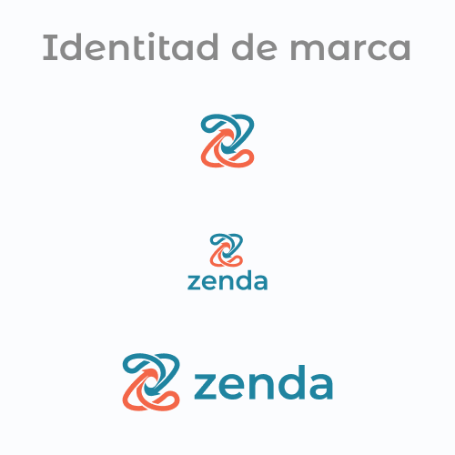

Zenda, una plataforma para la agenda cultural
Un proyecto integral que abarca desde el isotipo hasta el CRM: identidad de marca, sistema de diseño, sitio público para descubrir talleres y un panel de gestión para quienes los organizan.

El punto de partida
Zenda nació como un proyecto personal de diseño y estrategia de producto para resolver la fragmentación del mercado de talleres y experiencias de autor en Asunción.
Zenda es una plataforma que conecta dos lados de un mismo problema: quien busca un taller —cerámica, bordado ñandutí, yoga, canto— y quien lo organiza y necesita administrar inscripciones, pagos y asistencias sin perderse en planillas y mensajes sueltos.
Por eso el proyecto no se resolvía con una sola pantalla. Requería una marca que funcionara en ese contexto cultural, un sistema de componentes que sostuviera productos distintos, y tres interfaces con necesidades muy diferentes entre sí.
Una marca que sugiere encuentro
El isotipo parte de dos formas entrelazadas que se cruzan sin cerrarse: la idea de encuentro entre quien enseña y quien aprende. La paleta combina un turquesa sereno con un coral cálido, para escapar del gris institucional.
El nombre Zenda proviene del concepto de senda o camino: el trayecto compartido de aprendizaje y conexión. Descartamos símbolos literales (como calendarios, tickets o birretes) para no encasillar a la plataforma como una ticketera masiva ni como una academia tradicional. El isotipo se construyó sobre un sistema de vectores continuos que forman una 'Z' implícita a través de dos nodos dinámicos: el flujo de gestión del organizador y la experiencia de descubrimiento del asistente, asegurando legibilidad extrema tanto en favicons como en aplicaciones físicas.
Un design system para sostener tres productos
Con una web pública, un dashboard y un CRM conviviendo, mantener coherencia a mano era inviable. Documenté los componentes con todos sus estados —default, hover, activo y deshabilitado— para que cualquier pantalla nueva se armara con piezas ya resueltas.
- Controles de selección: checkbox, radio buttons y toggles
- Indicadores de progreso y estados de carga
- Reglas de uso documentadas junto a cada componente
La web: encontrar un taller sin fricción
La pantalla pública se ordena alrededor de una sola pregunta: ¿qué puedo hacer y cuándo? Por eso los filtros de categoría, fecha y búsqueda están arriba de todo, y cada tarjeta responde de un vistazo lo que la persona necesita para decidir: precio, cantidad de clases, fecha y quién lo dicta.
La separación entre «Eventos destacados» y «Lo que se viene» resuelve dos intenciones distintas: la de quien viene a explorar y la de quien ya sabe que quiere anotarse a algo pronto.
Dashboard y CRM: el trabajo invisible
El panel responde lo que un organizador necesita saber apenas entra: ingresos del mes, asistentes totales, eventos activos y cancelaciones, con el próximo evento siempre a la vista. Las barras de ocupación por taller permiten detectar de un golpe cuál se está llenando y cuál no.
El CRM baja al detalle: quién se inscribió, si pagó, cuántos eventos asistió antes y cómo contactarlo. Los estados —pagado, pendiente, cancelado— usan color y etiqueta a la vez, para que no dependan solo de la vista.
Resultados y aprendizajes
Diseñar Zenda me enseñó a priorizar la arquitectura del sistema por encima de soluciones visuales aisladas. El valor real del proyecto residió en estructurar un lenguaje común entre la herramienta de gestión y la plataforma pública, asegurando que cada decisión de diseño redujera directamente el tiempo de soporte manual del organizador. Entender el flujo operativo como un ecosistema vivo —donde un cambio en los cupos impacta en tiempo real la confianza de compra del usuario— consolidó mi visión sobre cómo el diseño de producto debe resolver cuellos de botella de negocio reales.